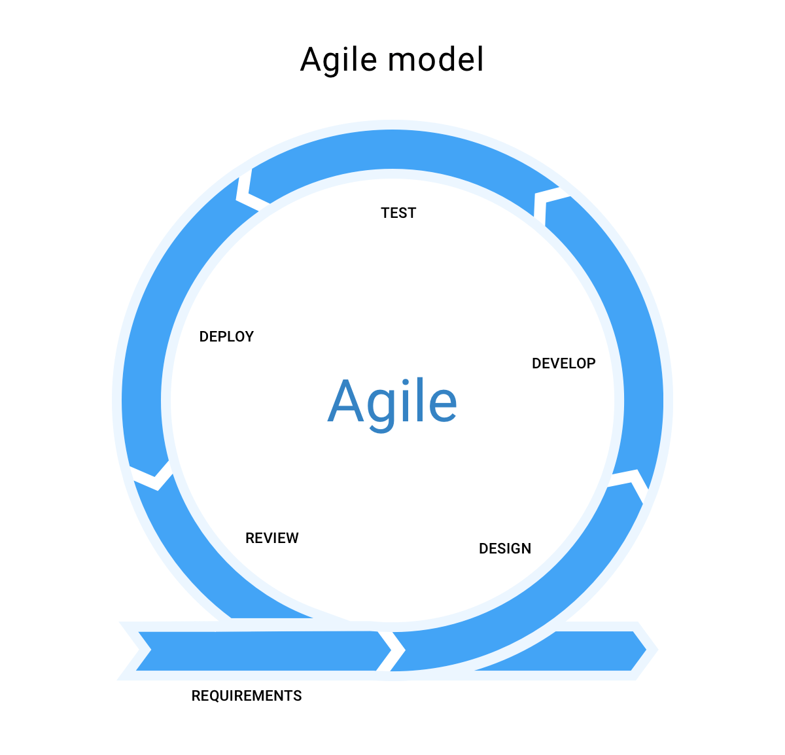
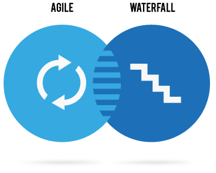
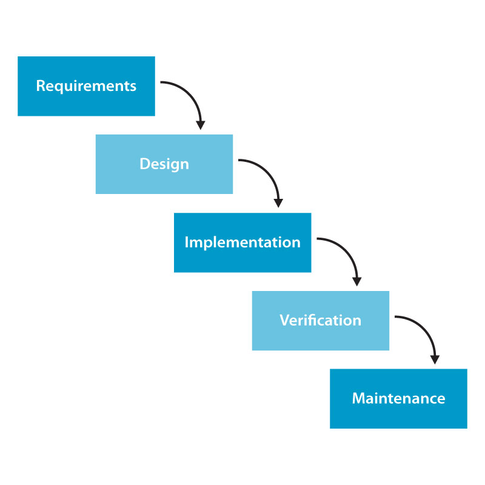

Agile
Advantages of Agile model

Disadvantages of Agile model


Agile SDLC model is a combination of iterative and incremental process models with focus on process adaptability and customer satisfaction by rapid delivery of working software product. Agile Methods break the product into small incremental builds. These builds are provided in iterations. Each iteration typically lasts from about one to three weeks. Every iteration involves cross functional teams working simultaneously on various areas
The Waterfall Model was the first Process Model to be introduced. It is also referred to as a linear-sequential life cycle model. It is very simple to understand and use. In a waterfall model, each phase must be completed before the next phase can begin and there is no overlapping in the phases.
Waterfall
